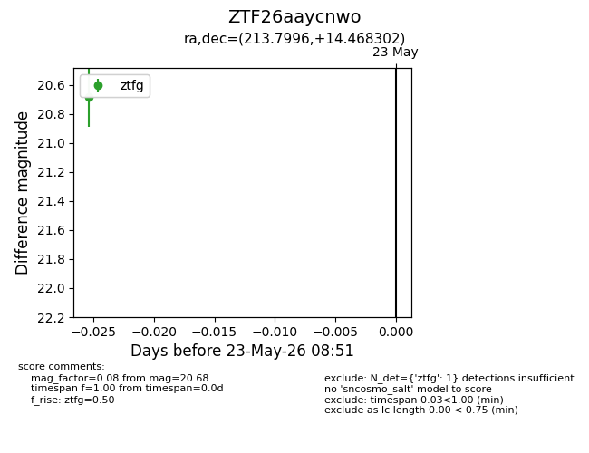
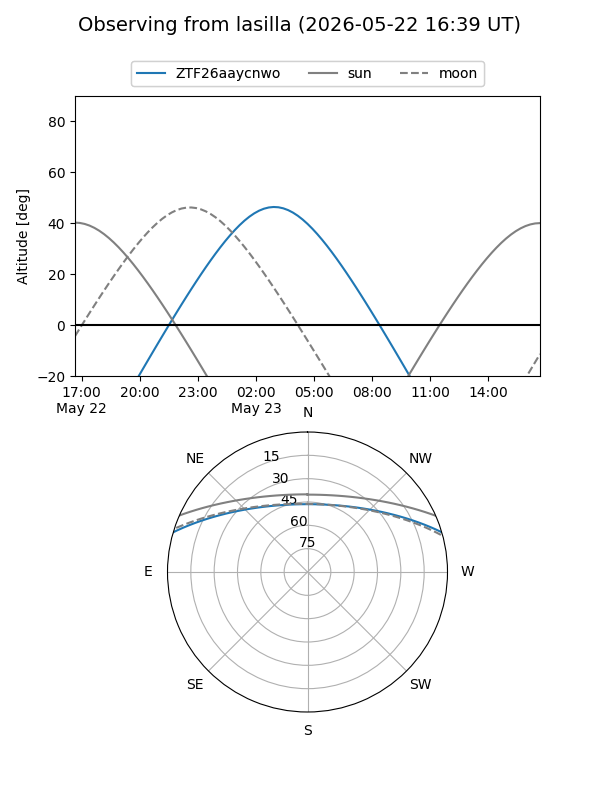
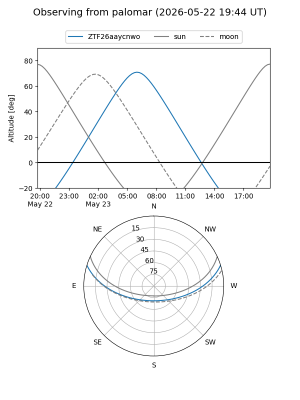

ZTF26aaycnwo
Target ZTF26aaycnwo at 2026-05-23 08:52
Aliases and brokers:
lsst-FINK: link
lsst-Lasair: link
lsst-ALeRCE: link
ztf-FINK: link
ztf-Lasair: link
ztf-ALeRCE: link
alt names
ZTF26aaycnwo (ztf,fink_ztf)
Coordinates:
equatorial (ra, dec) = 213.7996,+14.46830
equatorial (HMS+DMS) = 14:15:11.89,+14:28:05.89
galactic (l, b) = (4.1628,+66.74730)
Flags:
Photometry:
last ztfg=20.68
1 ztfg detections
Lightcurve

Visibility


Additional plots